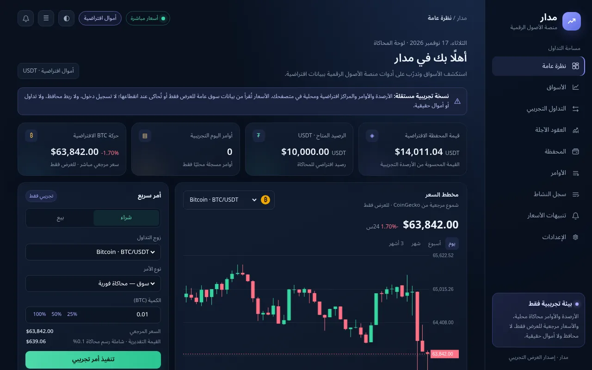
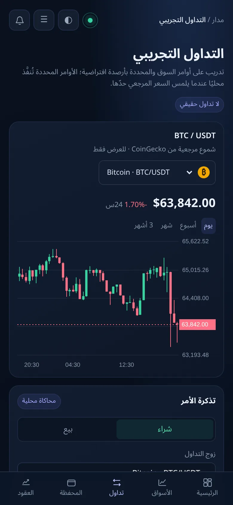

📈
أسعار وشموع مرجعية
شموع يابانية بفترات 15 دقيقة حتى أسبوع، ودفتر أوامر وآخر الصفقات، من بيانات سوق عامة للقراءة فقط مع بديل محاكاة تلقائي.
مدار منصة تجريبية للتدرّب على تداول الأصول الرقمية: سوق فوري، عقود آجلة برافعة حتى 20×، محفظة، أوامر محددة وتنبيهات أسعار، بأسعار سوق مرجعية مباشرة ورصيد افتراضي قدره 10,000 USDT.


صُممت الواجهة لتشبه منصات التداول الحديثة، لتتعلّم المفاهيم كما ستراها في الواقع.
شموع يابانية بفترات 15 دقيقة حتى أسبوع، ودفتر أوامر وآخر الصفقات، من بيانات سوق عامة للقراءة فقط مع بديل محاكاة تلقائي.
أوامر سوق فورية وأوامر محددة تُنفَّذ تلقائيًا عندما يلمس السعر حدّها، مع رسوم محاكاة 0.1% وأزرار 25/50/100%.
مراكز طويلة وقصيرة برافعة 1× حتى 20×، هامش معزول، وقف خسارة وجني ربح، وسعر تصفية تقريبي مرسوم على المخطط.
رصيد ابتدائي 10,000 USDT وأصول متنوعة، تتحدّث قيمتها مع السعر، مع إمكانية إضافة رصيد وهمي أو إخفاء الأرقام.
حدّد سعرًا أعلى أو أدنى، وسيظهر لك إشعار داخل الصفحة لحظة تحقّقه مع تسجيله في سجل النشاط.
مظهر داكن وفاتح، تنقّل سفلي على الجوال، يعمل دون اتصال للواجهة، ويمكن تثبيته على الشاشة الرئيسية كتطبيق.
اختر شاشة لمشاهدتها.
اضغط «جرّب المنصة». لا تسجيل ولا كلمة مرور؛ يبدأ رصيدك الافتراضي فورًا.
تصفّح الأسواق، أضف عملاتك للمتابعة، وحلّل الشموع ودفتر الأوامر.
جرّب أمر سوق أو أمرًا محددًا، أو افتح مركز عقود برافعة ووقف خسارة.
تابع الربح والخسارة وسجل النشاط، ثم أعد ضبط البيئة متى شئت وابدأ من جديد.
لا. كل الأرصدة والأوامر والمراكز افتراضية بالكامل. لا يوجد إيداع أو سحب، ولا تُرسل أي أوامر إلى أي منصة أو وسيط.
تُقرأ الأسعار والشموع ودفتر الأوامر من واجهة Gate العامة بدون أي حساب أو مفاتيح، للعرض فقط. إذا انقطعت أو أوقفتها من الإعدادات تتحول المنصة تلقائيًا إلى أسعار محاكاة.
لا. لا نطلب اسمًا أو بريدًا أو كلمة مرور. تُحفظ بياناتك التجريبية في متصفحك فقط (localStorage) ويمكنك مسحها بزر «إعادة ضبط البيانات».
نعم. الواجهة متجاوبة مع شريط تنقّل سفلي على الجوال، ويمكنك تثبيتها من قائمة المتصفح «إضافة إلى الشاشة الرئيسية». الواجهة تعمل دون اتصال، والأسعار تحتاج إنترنت.
لا. المحاكاة لا تشمل الانزلاق السعري الكامل ولا السيولة الحقيقية ولا الضغط النفسي. التداول الحقيقي، خصوصًا بالرافعة، قد يؤدي إلى خسارة رأس المال كاملًا. لا شيء هنا نصيحة مالية.
الفوري يعني شراء الأصل نفسه برصيدك الافتراضي. العقود الآجلة رصيدها الافتراضي منفصل وتتيح الشراء أو البيع على المكشوف برافعة، مع سعر تصفية ووقف خسارة وجني ربح، وأداة «مسرح حركة السعر» لتجربة السيناريوهات.